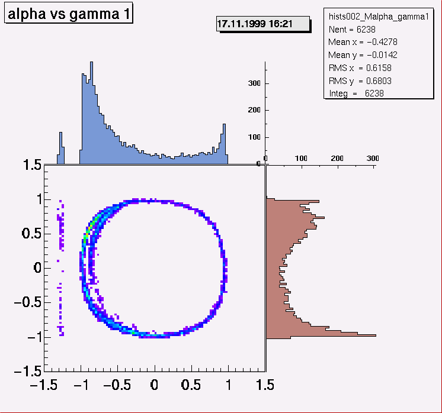

Help on items in Display popup menu Display actions
Help_on_Expand Help_on_Entire Help_on_Rebin Help_on_Contour Help_on_Marks Help_on_Project ProjectF, Project along function Help_on_Project_Both Help_on_RedefineAxis Help_on_Show_in_same_range Help_on_Superimpose Help_on_RedefineAxisUse of marks
Marks are used when expanding and fitting histograms. They are set pressing the middle mouse button in a histogram. If no marks are active the lower and upper edges of the histogram are used, if only one mark is active the lower or upper edge is used as the second mark depending on the position of the InOutSide switch. Marks may be set using keyboard input. (Set2Marks). They can be converted to windows. These windows may be written to a workfile to be used by other programs like cuts in 2dim histograms.Expand
Expand histgram using marks, if only one mark is active the lower edge is used as the second mark. This builds a new histogram, under- and overflow bins will be refilled correctly. The command Entire shows the full range range again. To get only an expanded view move the mouse into the labels of the wanted axis, the cursor should turn into a hand with a forefinger, press the left mouse button and drag the mouse to the required position an release the button. To get back to the full picture use the command Entire from the Display popup menu.RedefineAxis
The values of the axis labels may be redefined by providing new lower and upper limits for the axis. In this way the picture can reflect a calibrated spectrum. Note: This only changes the appearance of the picture. The histogram itself remains unchanged.Project
The commands ProjectX, ProjectY produce projections on the X or Y axis for a 2-dim histogram. Active cuts will be applied.Project along function
ProjectF will project the difference of the Y - values to the values of a function previously generated by a fit (See Help on Fitting). The result is the superposition of slices in X of the 2-dim histogram where each slice is shifted such that its Y - value equal to the function value is moved to zero. So the resulting projection on the Y-axis will be centered at zero. This allows a banana shaped distribution to be straightened so the banana shows its real thickness in the Y-projection.Project on X and Y
The command ProjectBoth produces projections on the X and Y axis for a 2-dim histogram in the same picture. The attached figure demonstrates this.  The ratio of the space taken by the scatter plot and the projections may by adjusted by the parameter Project_Both_Ratio (see Help_on_Default_Window_SizesShow entire histogram
Show full range of histogramShow in same range
Show a histogram in same range as this one. A list of histograms in memory is presented allowing a selection.Superimpose
Superimpose a histogram on existing picture. A histogram can be selected from a histogram list by pressing the grey button left of the name. If none is selected a list of histograms in memory is presented from which selection can be done. The latter is needed to show histograms which result from an operation (scaled, summed etc.). histogram. For 1-dim the color code is taken from its position + 2 (position 1 gets red etc.) With this command the same scale is used as for the original histogram. A command Superimpose scaled is provided for 1-dim hists to scale the superimposed histogram to the maximum of the original one in the displayed region.Rebin
Rebin this histogram using the ROOT builtin command. This command uses the sum of the bin contents. There is an extended Rebin command provided by HistPresent which produces a new histogram with sum or avarage of the bin contents selectable.User defined contours
Levels and colors in 2-dim histograms using the drawing options colz or similiar are normally automatically adjusted using 20 equidistant levels and a color spectrum blue-green-yellow-red (rainbow colors). Levels and colors can be selected using Set User Contours in the Display popup menu. Color numbers or levels may all be set to 0, in this case the default colors (e.g. rainbow) and the default equidistant levels are used. The convention is such that cells with content greater than a xx level value and less orequal to the following value get the corresponding color. That means cells with content below the lowest level are in background color (not visible). So in the normal case when no cells with negative content are present the lowest level should be 0. These settings can be saved to a rootfile and reused later. Save is done be the command Save User Contours Restore is done by selecting the required contour object in the File list and pressing Use Selected Contours